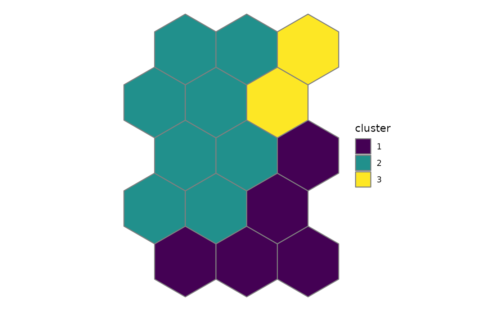

The prototypes (codebook vectors) of the units are grouped by hierarchical clustering or k-means. Samples belong to the cluster of their unit. This two-level approach (Vesanto and Alhoniemi 2000) is faster and more robust than clustering the samples directly.
Arguments
- som
object of class eemsom, see
eemsom- k
number of clusters, see
eemsom_kselectfor help choosing k- method
"complete"(default, Ejarque-Gonzalez and Butturini 2014) or any other method ofhclust, or"kmeans"- seed
seed for the random number generator, only used for
method = "kmeans". WithNULL(default), the current random number stream of the session is used, soset.seedbefore the call gives reproducible results. With a number, the seed is set for this calculation only and the random number state of the session is restored afterwards.
References
Vesanto, J., Alhoniemi, E. (2000). Clustering of the self-organizing map. IEEE Transactions on Neural Networks 11(3), 586-600. doi:10.1109/72.846731
Ejarque-Gonzalez, E., Butturini, A. (2014). Self-Organising Maps and Correlation Analysis as a Tool to Explore Patterns in Excitation-Emission Matrix Data Sets and to Discriminate Dissolved Organic Matter Fluorescence Components. PLoS ONE 9(6), e99618. doi:10.1371/journal.pone.0099618
See also
Other clustering:
eemsom_kselect(),
eemsom_plot_silhouette(),
eemsom_split()
Examples
data(eem_list)
som <- eemsom(eem_list, rlen = 100, seed = 42)
som <- eemsom_cluster(som, k = 3)
eemsom_samples(som)
#> sample unit x y distance hits umatrix cluster
#> 1 d0680sfK 9 3.5 2.5980762 2.300073 1 36.48733 1
#> 2 d1266sf 3 3.5 0.8660254 9.054573 2 10.92376 1
#> 3 d1268sfK 3 3.5 0.8660254 11.834547 2 10.92376 1
#> 4 d1543sfK 13 1.5 4.3301270 7.938452 5 11.58416 2
#> 5 d1549sfK 13 1.5 4.3301270 9.879895 5 11.58416 2
#> 6 d1550sfK 7 1.5 2.5980762 4.606082 3 15.87562 2
#> 7 d1557sfK 13 1.5 4.3301270 4.190952 5 11.58416 2
#> 8 d1559sfK 13 1.5 4.3301270 8.586989 5 11.58416 2
#> 9 d1565sfK 7 1.5 2.5980762 6.557108 3 15.87562 2
#> 10 d1567sfK 13 1.5 4.3301270 18.078294 5 11.58416 2
#> 11 d1568sfK 7 1.5 2.5980762 8.106521 3 15.87562 2
#> 12 d492sf 1 1.5 0.8660254 3.276772 2 21.19327 1
#> 13 d661sf 1 1.5 0.8660254 3.092985 2 21.19327 1
#> 14 d667sf 2 2.5 0.8660254 1.694963 1 14.83993 1
#> 15 dSFB445pwd1t 15 3.5 4.3301270 2.842423 1 55.31539 3
eemsom_plot_map(som, type = "cluster")
